| Printer | Bambu Lab H2D, 0.4 mm nozzle, PLA |
| Written | 19 October 2026 |
| State | 265 automated tests passing; chunk mode calibrated; brick mode working in software; brick grip not yet confirmed on a real print |
| Written for | The project owner. Plain language first, with a short technical box in each section. |
You handed over three specification documents and asked for a tool that splits a 3D model into 3D-printable pieces, joins them with connectors, and writes an assembly guide. Along the way your real goal became clear: "custom legos for anything". You want to take any model and build it from a small set of identical, interlocking bricks you print yourself.
That produced two modes that sit side by side. Chunk mode cuts a model that is too big for the print bed into a few large pieces. Brick mode turns any model into a stack of small repeated bricks. Brick mode is not real-LEGO compatible, by your choice.
| Part of the project | Status | Evidence |
|---|---|---|
| Chunk mode (cut big models, joints, guide) | working | Joint fit calibrated by real prints: 0.19 mm |
| Smarter cuts, caching, print estimates | working | Estimates within 16 % on time and 2 % on weight of your 5 real slices |
| Brick mode in software | working | Small vase becomes 108 bricks of 6 shapes, with plates, parts list and course maps |
| Brick grip (the click that holds two bricks) | not yet proven | Many print rounds (section 6.1); none yet a brick pair that clicks and holds |
| Fit gauge, to measure your printer | built, unprinted | Waiting on the printer (storage error) |
This report also records the wrong turns. Several of my explanations turned out to be mistaken, and the corrected versions are more useful than a clean story would be. Section 7 lists them all.
You give Cleaveform a 3D model file (.stl). It checks and repairs the model, then follows one of two paths. Both paths use the same cache, the same cost scoring and the same print-time estimates, and both are deterministic: running the same model twice gives byte-identical files.
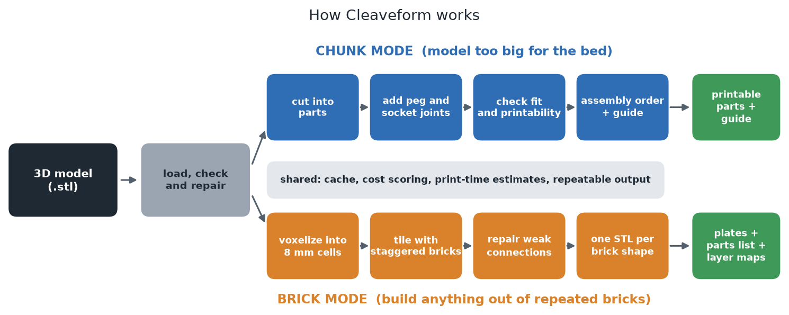
trimesh with the manifold3d boolean engine, shapely for 2D work and numpy. Every tunable number lives in one configuration file, and a test fails the build if any tunable number is written inline elsewhere. Your printer's measured values live in myprinter.json.What it does: takes a model too large for the printer, decides where to cut, adds peg-and-socket connectors across every cut, checks each part can be printed, works out the order to assemble them, and writes an assembly guide.
A 400 × 400 × 120 mm block cannot be printed whole. Chunk mode cut it into four parts, found four cut faces needing connectors, and planned three assembly steps. At your calibrated settings the estimate is about 56 hours and 4.2 kg of filament in total.
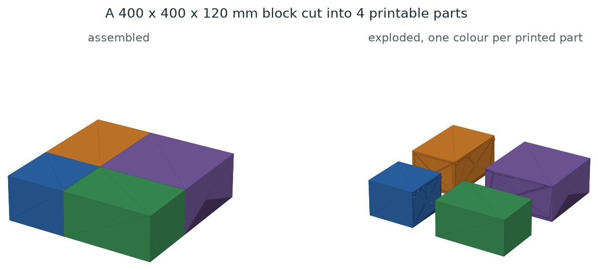
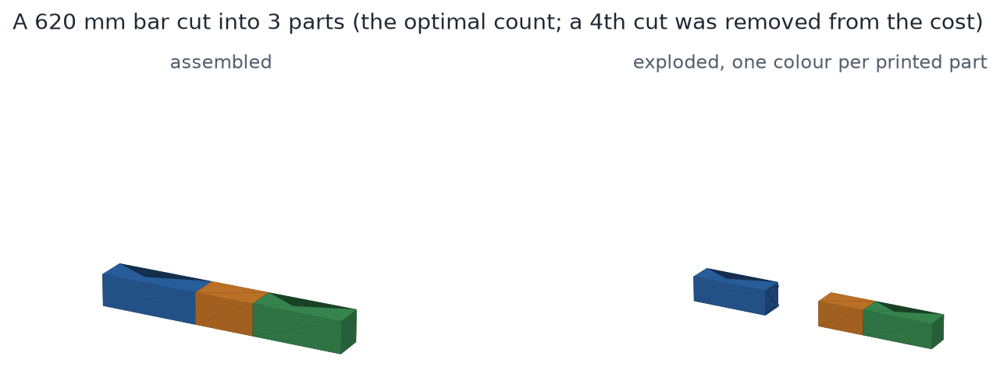
A peg that is exactly the size of its socket will not go in, and one that is too small wobbles. The right gap depends on your printer, filament and slicer settings, so it cannot be calculated; it has to be printed and felt.
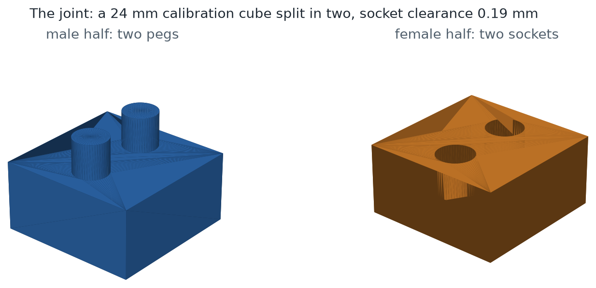
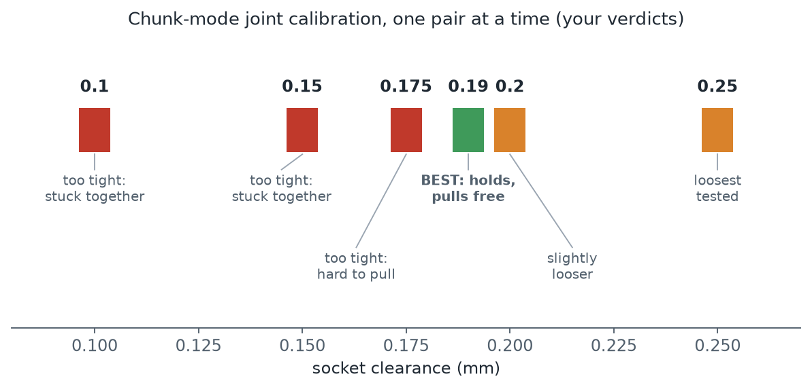
Several cuts can satisfy the size limit, so a six-factor score picks the best one: number of parts, support material needed, how visible the seams are, number of joints, print time, and how much a cut weakens the part. The weights can be changed in the config.
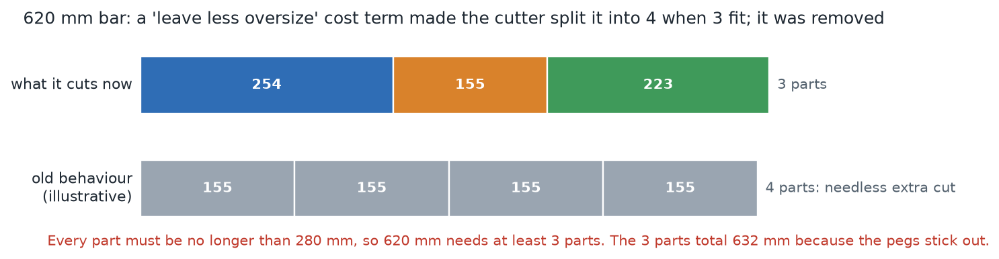
Each stage's result is saved under a key made from its input and only the settings that affect it, so changing one setting only recomputes what depends on it.
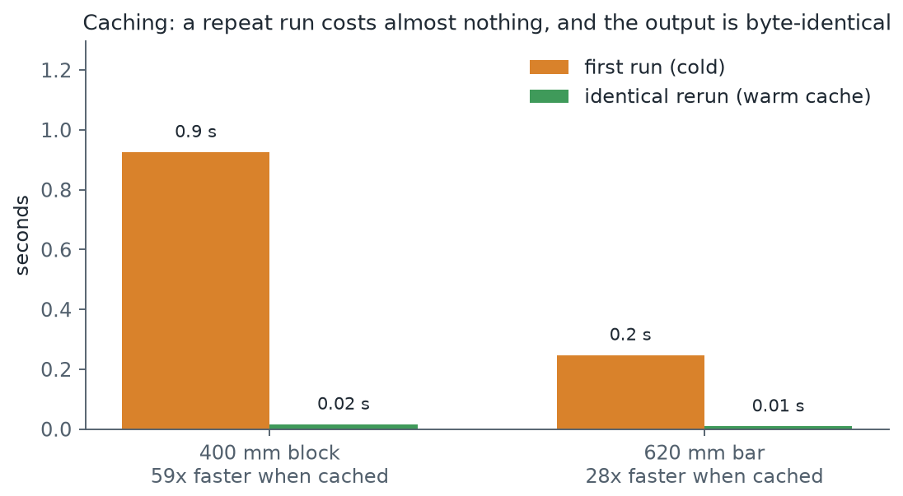
You sliced five shapes in Bambu Studio and gave me the times and weights. The estimator was fitted to those.
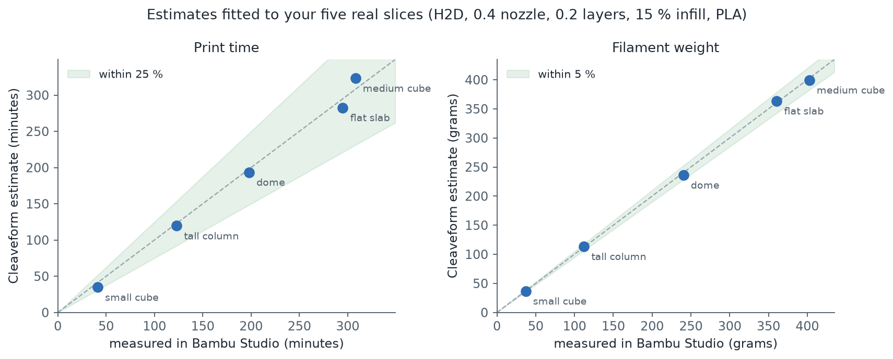
| Sample | Measured time | Estimated | Error | Measured weight | Estimated | Error |
|---|---|---|---|---|---|---|
| tall column | 123 min | 120 min | -2.8 % | 112 g | 113 g | +1.0 % |
| flat slab | 295 min | 283 min | -4.1 % | 361 g | 364 g | +0.8 % |
| medium cube | 308 min | 323 min | +5.0 % | 403 g | 400 g | -0.8 % |
| small cube | 41 min | 35 min | -15.7 % | 37 g | 37 g | -0.5 % |
| dome | 198 min | 194 min | -2.2 % | 240 g | 236 g | -1.8 % |
shell thickness) against weight, the cleanest signal for volume, and only then fit speed and layer overhead against time. The lesson: when two outputs share one physical term, calibrate it against the cleaner measurement. The small cube is the weakest point at 15.7 %, because small parts are dominated by overhead the model only approximates.This is the mode that serves your real goal. It builds any model out of identical bricks, so a few printed shapes can make many different things.
The model is sliced into a grid of 8 mm cells and each cell is marked filled or empty. The obvious way, marking every cell the surface touches, inflates the model by up to a full cell in every direction.
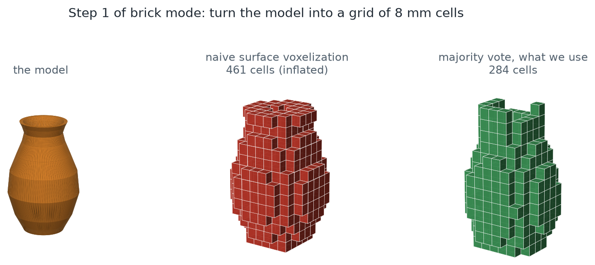
Bricks only grip up and down. Two bricks side by side in the same layer are not attached to each other; what holds them is a brick in the layer above sitting across both, exactly like a brick wall. So if every layer breaks in the same places, the model falls apart along those lines.
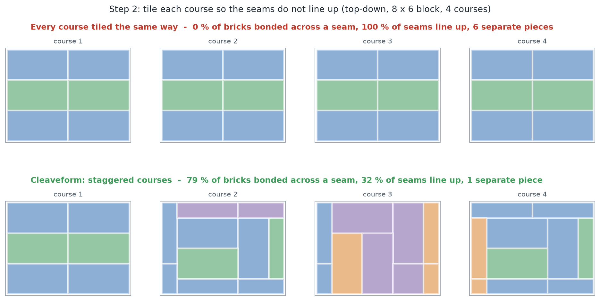
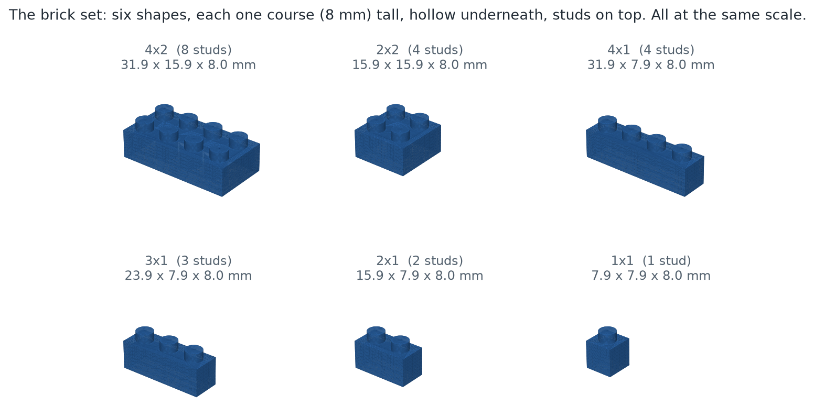
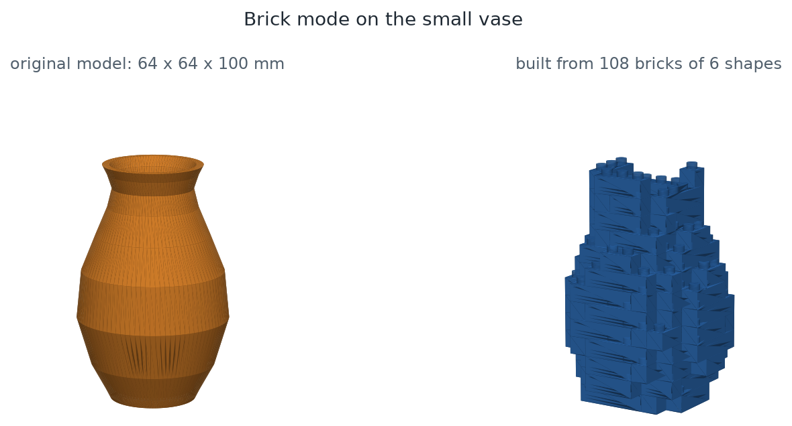
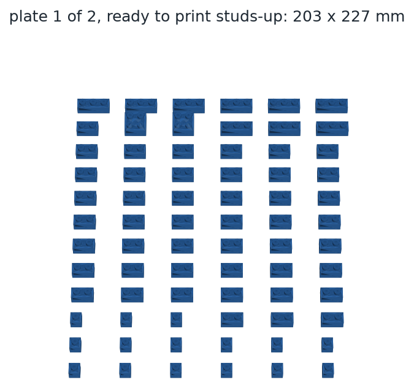
This is real output from today's run, shortened. It lists what to print, how many of each, and a map for every layer, with each letter one brick and neighbours never sharing a letter.
==============================================================================
CLEAVEFORM BRICK BUILD GUIDE
==============================================================================
Source model : models\small_vase.stl
Model size : 64.0 x 64.0 x 100.0 mm
Brick grid : 8 x 8 studs, 13 courses
Stud pitch : 8.0 mm
Bricks : 108 from 6 shapes
Clutch fit : 0.55 mm interference, printer bias +0.00 mm
...
------------------------------------------------------------------------------
BILL OF MATERIALS
------------------------------------------------------------------------------
SHAPE QTY SIZE (studs) EST WEIGHT
brick_1x1 15 1x1 6 g
brick_2x1 46 2x1 34 g
brick_2x2 2 2x2 3 g
brick_3x1 19 3x1 20 g
brick_4x1 24 4x1 34 g
brick_4x2 2 4x2 5 g
TOTAL 108
Estimated filament: 103 g over 2 plate(s), ~1.4 h
Estimates from cleaveform, not slicer output.
...
Course 1 of 13 (7 bricks)
........
..BBB...
.AAAAC..
.CCCCBA.
.CCCCBA.
.AAAABA.
.AAAAB..
........
Course 2 of 13 (9 bricks)
........
.ABBBA..
.A...AB.
B.....B.
B.....B.
BA....B.
.AB..AA.
..AAA...
... (11 more courses) ...
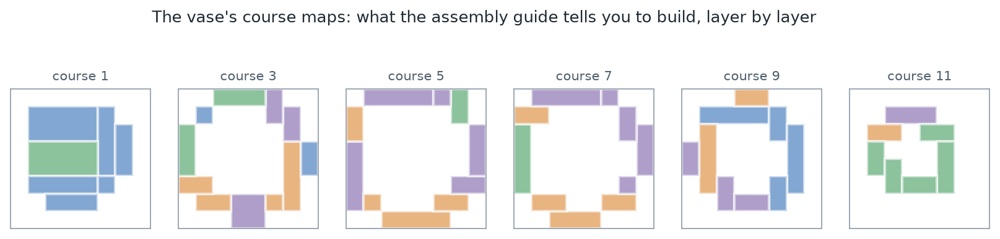
The clutch is what makes two bricks click together and stay together, yet still come apart by hand. In a real LEGO brick it is held to about a hundredth of a millimetre by injection moulding. A 3D printer holds roughly ten times that, so the fit has to be designed to survive the printer.
| # | What was tried | What you reported | What I concluded at the time, and what we know now |
|---|---|---|---|
| 1 | Solid brick, hole sized by a clearance of 0.19 mm (borrowed from the chunk joint) | Loose | Tightening the clearance should have helped. |
| 2–4 | Clearances 0.175, then 0.16; smaller test pieces; a hollow brick; a 3-stud pair | Still loose; "super super loose"; one of two identical small bricks clicked and the other did not; the 3-stud pair "slips" | All of these rounds felt the same. In hindsight the whole tested span was narrower than the printer's own variation. |
| 5 | Review of the design | (asked me to work out what was going on) | Found that most of the flex was in the thin roof (about 79 % of it), not the wall that was meant to be the spring. The fix was a deliberately thin 0.9 mm spring wall, a thicker 1.6 mm roof, and a designed interference instead of a clearance. This was analysis, never confirmed by measurement. |
| 6 | The redesign (thin walls, bumps, designed interference), tested on a ladder that I narrowed to three rungs: 0.30 / 0.40 / 0.50 | "Every print is failing... spaghetti as soon as it starts" | I blamed the bump noses reaching the plate. That explanation was wrong (section 6.3). |
| 7 | A one-layer relief under the bumps, then a moulded flange around each coupon to help adhesion | "Some of them still spaghettified"; later "I fixed the printer", and the flange was removed | My second explanation (bed contact) was also wrong. Your printer fix was the real fix. |
| 8 | Ladder 0.80 / 1.00 / 1.20 on the bump design | The bumps inside make it very hard to line up, so it will not click | A real design flaw: three studs had to register into three pairs of bumps at once. Replaced by rails (section 6.4). |
| 9 | Rails with a lead-in ramp, ladder 0.40 / 0.55 / 0.70; then the fit gauge; then one pair at 0.55 plus the gauge | Printer storage error, nothing printed yet | Waiting. This is where the project stands. |
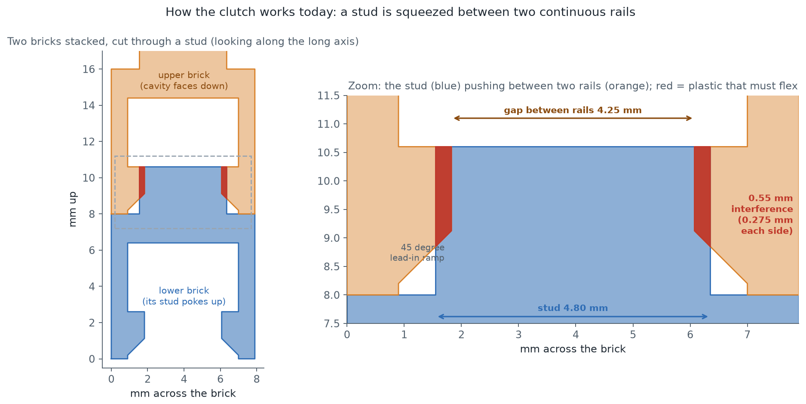
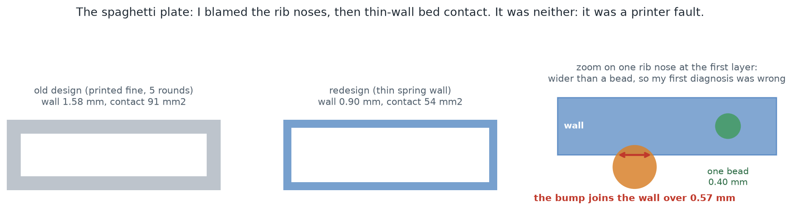
Explanation 1 (wrong): the rounded bump noses reached the build plate as tiny specks held on by a neck thinner than one extrusion bead. I had measured how far a bump pokes past the wall face (0.16 mm) and reported it as how wide it joins the wall. The join is a chord across the circle and is 0.57 mm, wider than the 0.40 mm bead. They were fused and printable.
Explanation 2 (wrong): thinner walls cut the first-layer contact from about 91 to 54 mm², so parts lifted off. The contact area did drop by 40 %, but it was not the cause. After you fixed the printer, the problem went away.
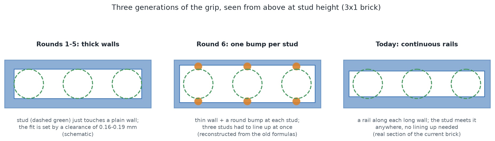
Bumps were chosen because a small feature is easier to tune than a whole wall. What I never considered was how it feels to assemble them. The design was optimised for calibrating, not for using. A continuous rail with a 45-degree ramp along its bottom edge has nothing to line up: the stud meets it wherever it lands. The ramp is derived to stay at 45 degrees whatever the interference.
The numbers are not comparable across this change. A bump lets the wall dish around it, which gives back part of the interference; a rail loads the whole wall and gives nothing back. That is why the ladder moved down (0.40 / 0.55 / 0.70) when 0.80 had already been too tight.
Before suspecting the printer, I measured the exact STL files that were sent to you by casting rays through them. The rails are exactly as designed.
| Coupon | Designed gap between rails | Measured in the file | Stud width (designed 4.80) |
|---|---|---|---|
| 0.40 mm | 4.40 mm | 4.400 mm | 4.800 mm |
| 0.55 mm | 4.25 mm | 4.250 mm | 4.800 mm |
| 0.70 mm | 4.10 mm | 4.100 mm | 4.800 mm |
The model is exact at every stud position and every height, so whatever goes wrong happens between the file and the plastic (slicer settings, flow, wear on small contacts). The measuring method matters: two earlier ways of reading the files gave nonsense, because one re-frames coordinates and the other finds nothing on flat-sided shapes. Ray casting is the reliable one.
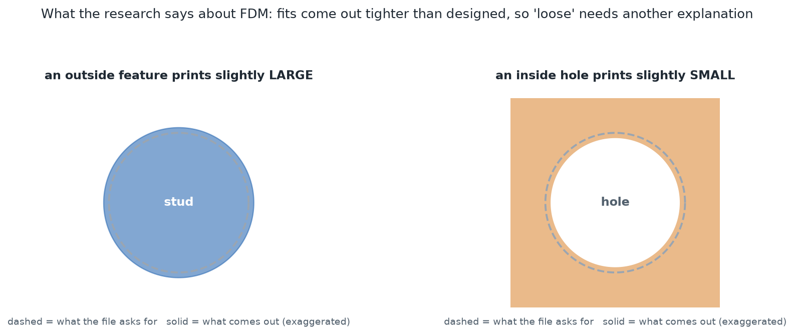
I had told you that a printed fit loses about four times any printer bias, because a stud prints small and a cavity prints large. The research says the opposite for cavities: holes come out undersized. So printed fits should run tighter than designed, which makes several rounds of "loose" more puzzling, not less. The candidates are a slicer setting enlarging cavities, small contact bumps wearing loose after a few presses, mixed-up test pieces, or the wall taking a permanent set (section 6.8). A fit ladder cannot tell these apart.
Other points from the same research: real LEGO is moulded to about ±0.01 mm against ±0.1–0.2 mm for FDM; PLA is the recommended material; thinner layers (0.10–0.15 mm) help clutch; and everyone who succeeds does it with a print, measure, adjust loop on their own machine.
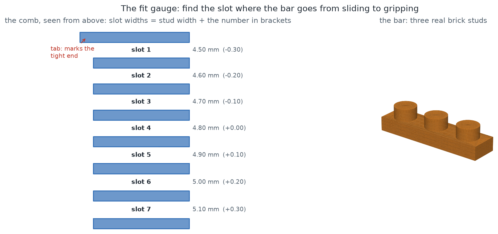
How to read it. Hold the bar studs-down and try each slot starting at the tab. Report A, the first slot it slides into freely, and B, the first slot it presses into and stays when you lift the comb. Those two numbers are your printer's real bias, measured directly. That value goes into brick_fit_bias_mm, and from then on every brick corrects for your printer, so the interference setting finally means what happens in the plastic.
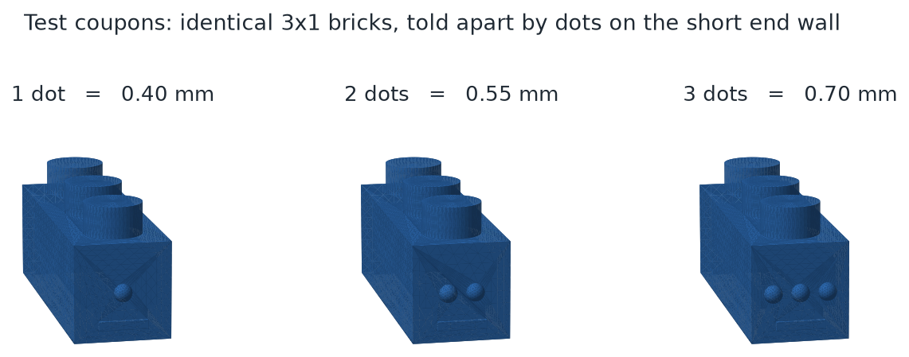
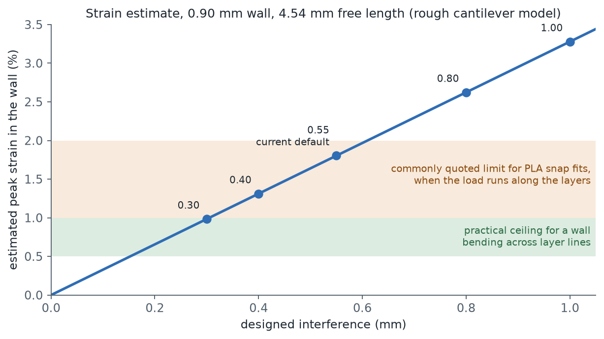
Treating the wall as a strip hanging from the roof (0.90 mm thick, 4.54 mm free length), the estimated peak strain at the current default of 0.55 mm is about 1.8 %. Printed PLA snap fits are usually kept near 1–2 %, and guidance halves that when the bend runs across layer lines, which a vertical wall bending sideways does. The practical ceiling is about 0.5–1 %, so anything above roughly 0.30 mm is over it.
These are listed because each one cost time, and because the pattern matters: most were confident explanations argued from arithmetic and never checked against a controlled comparison.
| # | What I said or did | What was true | How it was found, and the cost |
|---|---|---|---|
| 1 | The 48-sided stud has a 0.010 mm bias. | Measured exactly 4.800 mm. 48 sections of 7.5° make 90°, so a vertex lands on the axis. | Direct measurement. Told you straight away. |
| 2 | Hollowing the bricks saves about 20 % of filament. | 8 % when measured; my sketch had thinner walls and no tubes. | Measurement. A wrong expectation. |
| 3 | A test ladder that varied brick length to label the rungs. | Length also sets wall stiffness, so it varied two things at once. | Later analysis. A print round measured nothing clean. |
| 4 | Spaghetti was caused by rib noses reaching the plate as unprintable specks. | The join is 0.57 mm, wider than a 0.40 mm bead. Fused and fine. | Running my new test against the old geometry: it passed on both. Cost 31 % of stud engagement. |
| 5 | Spaghetti was caused by thin walls cutting bed contact; I moulded a flange on every coupon. | A printer fault. You fixed it and the problem vanished. | Your fix. An unnecessary flange you had to peel off. |
| 6 | Printed fits lose about four times the process bias because cavities print large. | Holes print small, so fits should run tighter, not looser. | Research this session. The explanation behind several rounds had the sign backwards. |
| 7 | Discrete bumps are a good way to tune the grip. | They are very hard to assemble: three studs must register at once. | You reported it. Replaced by rails. |
| 8 | You could allowlist the single blocked library under Smart App Control. | Smart App Control has no exclusion list. On or off is the only control. | Checked afterwards; you had already taken the one real option. |
| 9 | After the clutch redesign, brick mode was fine. | It crashed at its final step (writing the guide), which still read a removed setting. 263 tests passed because none ran the stages together. | Found while building this report. Fixed, with two end-to-end tests that I confirmed fail on the old code. |
Partway through, every geometry operation stopped working. The boolean library manifold3d is an unsigned add-on and Windows blocked it. Smart App Control has three states (On, Off, Evaluation), and in Evaluation Windows decides on its own whether to switch itself on. It switched itself on minutes after the same code had run fine, so nothing in the project had changed. You turned it off, and everything worked again. It cannot be turned back on without reinstalling Windows.
While it was blocked, 98 of the 247 tests at that moment failed and 9 more could not start, and 2D diagnostics with shapely (which needs no native library) were what kept the work moving.
Bambu Studio reported that storage needs to be inserted before printing over the network. The printer saves a sent file to its microSD card first, so the card is missing, loose, full or corrupted. The order to try: check the touchscreen, reseat the card, check it on a PC, format it, try another card. If the card is fine on screen but the error remains, the fallback is to slice, export the file, and carry it over on the card.
You asked whether a 0.4 mm hardened nozzle or a 0.6 mm high-flow nozzle would suit better. For this project: 0.4 mm. The gripping wall is 0.90 mm, which is two clean 0.42 mm lines. At 0.6 mm it is 1.45 lines, so the slicer improvises and can silently switch between one fat line and two thin ones, which changes the stiffness of the very spring we are tuning. A 0.6 mm nozzle makes sense later for production bricks with a 1.2 mm wall.
| Option | What it would do | Needs printer? |
|---|---|---|
| 1. Redesign so the wall cannot be over-stressed (recommended) | Lower the interference, lengthen the free part of the wall, or replace friction with a positive snap: a small ridge on the stud that clicks into a groove, so the grip comes from shape rather than from squeezing. Build two or three candidates with the strain check built in. | No |
| 2. Prepare one "decision plate" (recommended) | The gauge, the current bricks and the candidates on one plate, so the first print after the repair answers the most questions at once. | No (to prepare) |
| 3. Housekeeping | The README still describes the old bump ribs. A library call used in the tests was scheduled for removal in January 2026. The project folder holds nine old zips and about a dozen old output folders. | No |
| 4. Features for "legos for anything" | Packing plates for the H2D's build volume, mapping model colours onto the dual nozzle, a clearer assembly guide. | No |
| Setting | Value | Meaning |
|---|---|---|
brick_unit_mm | 8.0 mm | Stud pitch: the size of one brick cell. Changing it starts a separate, incompatible collection. |
brick_stud_radius_mm | 2.40 mm | Stud radius (derived from the unit). |
brick_stud_height_mm | 2.60 mm | Stud height. |
brick_wall_mm | 0.90 mm | Side wall thickness. Deliberately thin: this wall is the spring. |
brick_roof_mm | 1.60 mm | Roof thickness. Deliberately stiffer than the wall, so the wall does the flexing. |
brick_clutch_interference_mm | 0.55 mm | Designed overlap between a stud and the rails. Bigger is tighter. Not yet confirmed on a print. |
brick_fit_bias_mm | +0.00 mm | Your printer's measured fit bias. Left at zero until the gauge has been read. |
brick_rail_chamfer_mm | 0.925 mm | Height of the 45-degree lead-in ramp (derived). |
brick_rib_relief_mm | 0.20 mm | Rails start one layer above the plate, clear of elephant foot. |
brick_tube_clearance_mm | 0.30 mm | Gap between a roof-bracing tube and the studs. Tubes brace the roof and do not grip. |
brick_tube_wall_mm | 1.20 mm | Wall thickness of those tubes. |
brick_fit_clearance_mm | 0.10 mm | Gap between neighbouring bricks (they never mate sideways). |
joint_clearance_mm | 0.19 mm | Chunk-mode peg joint clearance, calibrated by print. Separate from the brick fit. |
265 tests across ten files, covering geometry, joints, assembly, costs, caching, estimation, units, configuration, brick mode and end-to-end acceptance runs.
| File | Tests | Covers |
|---|---|---|
| test_acceptance.py | 37 | Whole-pipeline guarantees: determinism, every part fits, constraint tiers, offline operation |
| test_brick.py | 65 | Brick geometry, tiling, layout, calibration fixtures, the gauge, the full brick run |
| test_cost.py | 26 | The six-term cost function |
| test_cache.py | 25 | Cache keys, stages, byte-identical warm runs |
| test_config.py | 22 | Settings, validation, no inline magic numbers |
| test_estimation.py | 22 | Time and weight against your real slices |
| test_geometry_and_export.py | 20 | Booleans, repair, export guards |
| test_joints_and_assembly.py | 20 | Peg and socket generation, assembly order |
| test_decompose.py | 14 | Cutting a model into parts |
| test_units.py | 14 | Unit detection and scaling |
| Path | What it is |
|---|---|
myprinter.json | Your measured printer values (joint clearance 0.19 mm, infill, speed, layer overhead, shell thickness, brick interference) |
next_print.zip | The four parts to print next: the fit gauge and a pair of bricks at 0.55 mm |
fit_gauge.zip | The gauge on its own |
models/, vase_out/, vase_bricks/ | The test vase and its chunk-mode and brick-mode results (the brick folder predates today's fix; rerun it for a fresh guide) |
cleaveform/, tests/, docs/ | The code, tests and the original specifications |
The strain figures in section 6.8 come from the standard cantilever formula, peak strain = 1.5 × thickness × deflection ÷ length², with the limits above taken as commonly quoted guidance. They are an estimate to be checked on a real print, not a measured property of your filament.